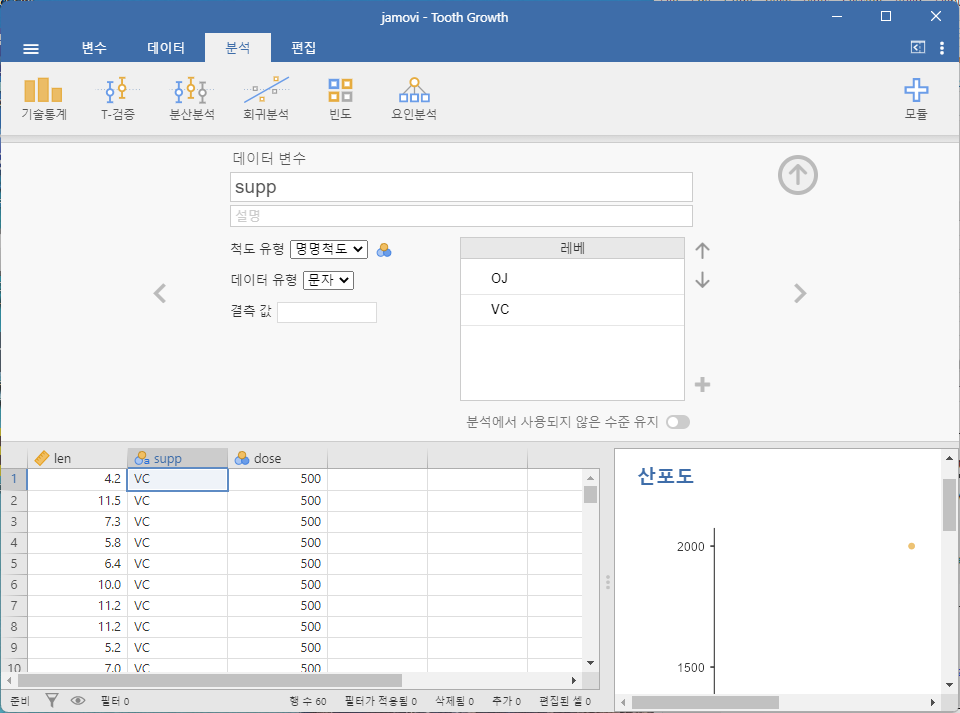

3 jamovi 시작하기
로봇은 함께 일하기 좋은 존재다.
– 로저 젤라즈니1
이 장에서는 jamovi를 시작하는 방법에 대해 이야기할 것입니다. jamovi를 다운로드하고 설치하는 방법을 간단히 설명하겠지만, 이 장의 대부분은 jamovi의 그래픽 사용자 인터페이스(GUI)를 익히는 데 초점을 맞추고 있습니다. 이 장의 목표는 통계 개념을 배우는 것이 아닙니다. 대신 jamovi가 어떻게 작동하는지 기본적인 내용을 배우고 시스템과 상호작용하는 데 익숙해지는 것입니다. 이를 위해 데이터 세트와 변수를 살펴보는 데 시간을 투자할 것입니다. 이로써 jamovi에서 작업하는 느낌을 어느 정도 익힐 수 있을 것입니다.
그러나 구체적인 내용으로 들어가기 전에, jamovi를 왜 사용해야 하는지에 대해 간단히 이야기하는 것이 좋겠습니다. 이 글을 읽고 있다는 사실은 아마도 jamovi를 사용하려는 나름의 이유가 있다는 뜻일 것입니다. 하지만 그 이유가 “우리 통계 수업에서 jamovi를 사용하기 때문”이라면, 강사가 왜 jamovi를 수업에서 선택했는지 조금 설명할 가치가 있을 것입니다. 물론 저는 다른 사람들이 jamovi를 선택하는 이유는 잘 모르기 때문에, 여기서 제가 이야기하는 것은 jamovi를 사용하는 저 자신의 이유입니다.
약간 뻔하지만 여전히 강조할 가치가 있는 점은, 컴퓨터를 사용해 통계를 처리하는 것이 수작업으로 하는 것보다 더 빠르고, 더 쉽고, 더 강력하다는 것입니다. 컴퓨터는 반복적이고 단순한 작업에 뛰어나며, 많은 통계 계산이 바로 그런 성격을 가지고 있습니다. 대부분의 사람들이 연필과 종이를 사용해 통계 계산을 하는 유일한 이유는 학습 목적일 것입니다. 제 수업에서도 가끔 그런 계산을 권장하지만, 그 유일한 가치는 교육적 목적에 있습니다. 스스로 계산을 몇 번 해보는 것은 통계에 대한 “감각”을 익히는 데 도움이 되므로 한 번쯤 해볼 가치는 있습니다. 그러나 딱 한 번만 하면 됩니다!
전통적인 스프레드시트(예: Microsoft Excel)에서 통계를 처리하는 것은 장기적으로 보면 일반적으로 좋은 선택이 아닙니다. 많은 사람들이 스프레드시트에 더 익숙하다고 느낄지 모르지만, 스프레드시트는 허용하는 분석의 종류가 매우 제한적입니다. 현실 세계에서의 데이터 분석을 스프레드시트를 사용해 처리하려는 습관이 생긴다면, 스스로 매우 깊은 함정에 빠지게 될 것입니다.
독점 소프트웨어를 피하는 것은 매우 현명한 선택입니다. 구매할 수 있는 상용 패키지가 많이 있으며, 제가 좋아하는 것도 있고 그렇지 않은 것도 있습니다. 일반적으로 이 소프트웨어들은 외형이 매끄럽고 강력합니다(스프레드시트보다 훨씬 더 강력합니다). 하지만 가격이 매우 비쌉니다. 보통 “학생용 버전”(기능이 제한된 버전)은 저렴하게 판매하고, “교육용 버전”(전체 기능을 제공하지만 교육 기관에 한정된 라이선스)은 꽤 부담스러운 가격에 판매하며, 상업적 라이선스는 매우 높은 가격표를 달고 있습니다. 이런 비즈니스 모델은 학생 시절에 사용자로 끌어들여, 졸업 후에도 그 도구에 의존하도록 만드는 것입니다. 그들의 전략을 비난하기는 어렵지만, 개인적으로는 수천 달러를 쓰지 않고도 피할 수 있다면 그렇게 하겠다는 입장입니다. jamovi 같은 오픈 소스이자 무료 패키지를 사용하면 이런 높은 라이선스 비용에 얽매이지 않을 수 있습니다.
지금은 잘 이해되지 않을 수도 있지만, 데이터 분석과 관련된 어떤 일을 하게 된다면 나중에는 jamovi가 무료 통계 프로그래밍 언어인 R의 강력한 프론트엔드라는 점을 사랑하게 될 것입니다. R을 다운로드하고 설치하면 기본적인 “패키지”들을 사용할 수 있는데, 그것만으로도 매우 강력합니다. R은 매우 개방적이고 널리 사용되기 때문에 통계의 표준 도구로 자리 잡았으며, 이를 확장하는 패키지가 많이 개발되었습니다. 이 패키지들 또한 무료로 제공됩니다. 제가 알아낸 점 중 하나는, 최근의 고급 데이터 분석 교과서를 보면 많은 경우 R을 사용하고 있다는 것입니다.
이것들이 제가 jamovi를 사용하는 주요 이유입니다. 물론 단점이 없는 것은 아닙니다. 비교적 새로운 도구2이기 때문에 이를 지원하는 교재와 기타 자료가 많지 않으며, 몇 가지 짜증 나는 특성도 있습니다. 하지만 전체적으로 보면 장점이 단점을 훨씬 능가한다고 생각합니다. 지금까지 제가 접한 다른 어떤 도구보다도요.
3.1 jamovi 설치하기
좋습니다. 이제 홍보는 그만하고 시작해 봅시다. 다른 모든 소프트웨어와 마찬가지로, jamovi를 사용하려면 “컴퓨터”에 설치해야 합니다. 컴퓨터란 멋진 일들을 하고, 무료 조랑말도 제공하는 마법 상자 같은 것입니다. 아니면, 이런 설명은 iPad 마케팅 캠페인과 컴퓨터를 혼동했을 수도 있겠네요. 어쨌든, jamovi는 온라인에서 무료로 배포되며 https://www.jamovi.org/에서 다운로드할 수 있습니다.
페이지 상단의 “Download”라는 제목 아래, Windows 사용자, Mac 사용자, Linux 사용자를 위한 별도의 링크를 볼 수 있습니다. 관련 링크를 클릭하면 온라인 설명이 꽤 직관적임을 알 수 있습니다. 이 글을 쓰는 시점에서 jamovi의 현재 버전은 2.3이지만, 보통 몇 달마다 업데이트가 이루어지므로 여러분이 사용하는 버전은 더 최신일 가능성이 높습니다.3
실습: jamovi 내려받아 설치하기
2025년 1월 28일 현재 jamovi의 홈페이제에 접속하면 ‘jamovi Cloud’와 ’jamovi Desktop’ 버전이 나타납니다. 이 책에서는 jamovi를 컴퓨터에 직접 설치하는 jamovi Desktop 버전을 기준으로 설명합니다.
‘jamovi Desktop’을 클릭하면 운영체제 별로 jamovi를 다운로드 받을 수 있는 페이지가 나타납니다. 접속 시점에 안정 버전(’solid’)과 가장 최신 버전(‘current’)를 다운로드 받을 수 있습니다. 소프트웨어의 버그를 탐색하는 것을 주저하지 않거나 꼭 필요한 기능이 최신 버전에만 제공되는 경우가 아니라면 안정 버전(‘solid’)를 클릭하여 다운로드 받을 것을 권장합니다.
다운로드 받은 파일을 실행하면 설치할 것인지 묻는데, ’Install’을 선택하면 설치가 진행됩니다. 설치가 완료되면 ’Finish’를 클릭하여 설치를 종료합니다.
3.1.1 jamovi 시작하기
어떤 운영체제를 사용하든 jamovi를 실행하고 시작할 시간입니다. jamovi를 처음 시작하면 Figure 3.1 같은 사용자 인터페이스가 나타납니다.
왼쪽에는 스프레드시트 뷰가 있고, 오른쪽에는 통계 분석 결과가 표시되는 영역이 있습니다. 가운데에는 이 두 영역을 나누는 막대가 있으며, 이를 왼쪽 또는 오른쪽으로 드래그하여 크기를 조정할 수 있습니다.
실습: jamovi에서 한글 설정하기
jamovi를 설치한 후 실행하면 메뉴가 영문으로 나오는데, 한글 메뉴가 나오도록 설정해 봅시다.
jamovi의 상단의 오른쪽 상단의 애플리케이션 메뉴(점 세 개로 표시됨)을 선택합니다.
애플리케이션 메뉴의 ‘Language’ 드롭다운 상자에서 ’한국어’를 선택합니다. 그러면 언어 설정을 변경하려면 jamovi를 재시작해야 한다는 안내 상자가 나타납니다. 확인을 클릭합니다.
- jamovi를 껐다가 다시 시작하면 다음처럼 한글로 메뉴가 나타납니다.

jamovi 스프레드시트에 다른 스프레드시트 소프트웨어처럼 직접 값을 입력할 수 있습니다. 또는 CSV(.csv) 형식의 기존 데이터 세트를 jamovi에서 열 수 있습니다. 뿐만 아니라 SPSS, SAS, STATA, JASP 파일도 jamovi로 직접 쉽게 가져올 수 있습니다. 파일을 열려면 왼쪽 상단의 ‘파일’4 탭(세 개의 가로선으로 표시됨)을 선택하고, ’열기’를 선택한 다음, ’데이터 라이브러리’에서 예제 파일이나, ’이 컴퓨터’에서 ’탐색’에 표시된 목록에서 컴퓨터에 저장된 파일 중 원하는 것을 선택하면 됩니다.
실습: Tooth Growth 예제 파일 열기
jamovi가 제공하는 Tooth Growth라는 예제 파일을 열어 봅시다.
‘파일’-‘열기’-’데이터 라이브러리’를 선택합니다.
목록에서 ’Tooth Growth’를 클릭합니다.
그러면 다음과 왼쪽 스프레드시트 뷰에 다음과 같이 3 개의 열로 구성된 데이터 세트가 표시될 것입니다. 이 데이터는 비타민 C를 제공하는 방식과 복용량에 따라 기니피그의 치아 모세포의 길이가 어떻게 달라지는를 실험한 데이터입니다.
- ‘len’: 치아 모세포의 길이
- ‘supp’: 보충 유형 (VC: 비타민 C vs. OJ: 오렌지 주스)
- ‘dose’: 비타민 C 복용량 (mg/일)
3.2 분석
분석은 상단에 있는 ‘분석’ 메뉴에서 선택할 수 있습니다. 특정 분석을 선택하면 해당 분석의 ’옵션 창’이 왼쪽에 표시되며, 여기에서 다양한 변수를 분석의 각 부분에 할당하고 다양한 옵션을 선택할 수 있습니다. 동시에, 분석 결과는 오른쪽 ’결과 창’에 표시되며, 옵션을 변경할 때마다 분석 결과가 실시간으로 업데이트됩니다.
분석 설정을 올바르게 완료했다면, 옵션 창의 오른쪽 상단에 있는 화살표를 클릭하여 옵션 창을 닫을 수 있습니다. 나중에 이 옵션으로 돌아가고 싶다면, 생성된 결과를 클릭하면 됩니다. 이렇게 하면 여러분(또는 동료)이 이전에 만든 분석으로 언제든지 돌아갈 수 있습니다.
더 이상 특정 분석이 필요 없다고 판단되면, 결과 창의 컨텍스트 메뉴를 사용하여 분석을 제거할 수 있습니다. 분석 결과를 오른쪽 클릭하면 메뉴가 나타나며, 여기에서 ’분석(Analysis)’을 선택한 다음 ’제거(Remove)’를 선택하면 분석을 제거할 수 있습니다. 하지만 이에 대한 자세한 내용은 나중에 다룰 것입니다. 우선 스프레드시트 뷰를 좀 더 자세히 살펴봅시다.
실습: Tooth Growth 데이터 탐색
jamovi가 제공하는 Tooth Growth라는 예제 데이터를 탐색해 봅시다.
‘분석’-‘탐구’-’기술통계’를 선택합니다.
왼편에 나타나는
기술통계옵션 창에서 다음을 수행합니다.
- ‘len’ 변수를 선택하여 ‘변수’ 상자로 이동합니다.
- 그러면 오른편의 결과 창에 다음과 같이 ‘len’ 변수의 평균, 중앙값, 표준편차 등의 통계량이 계산됩니다.

- 치아 모세포 길이(‘len’)이 복용량(‘dose’)에 영향을 받는지를 확인하기 위하여 왼쪽 창에서 다음을 수행합니다.
- ‘dose’ 변수를 ‘split by’ 상자로 이동합니다.
- 그러면 ‘len’이 ’dose’ 값 별로 분해되어 통계량이 계산됩니다.
- 너무나 많은 통계량이 제시되어 번잡한 느낌입니다. 하단의 ’통계’를 클릭하여 ’사례’와 ’평균’을 제외하고 다른 통계량은 체크를 해제합니다.
- 복용량 별 치아 모세포의 평균을 살펴보면 복용량이 많을수록 평균이 커지는 경향을 확인할 수 있습니다.
- 복용량에 따른 치아 모세포의 길이의 분포를 확인하기 위하여 히스토그램을 그려봅시다.
- 왼편 창 아래의 ’도표’를 선택하면 그릴 수 있는 도표가 나타납니다.
- ’히스토그램’을 선택하여 복용량 별로 치아 모세포 길이의 히스토그램을 그려봅니다.
왼편의 옵션 창의 우상단에 있는 화살표를 클릭하여 옵션 창을 닫습니다.
오픈편 결과 창에서 히스토그램을 클릭하여 옵션 창을 다시 엽니다. 그리고 복용량뿐 아니라 보충유형(
supp)으로도 데이터를 분할하여 기술통계량과 히스토그램을 그려봅니다.
- ‘supp’ 변수를 ‘split by’ 상자에 추가합니다.
- 분석된 내용을 문서 프로그램으로 복사할 수 있습니다.
- 오른편 결과 창의 히스토그램을 우클릭하면 컨텍스트 메뉴가 나타납니다.
- 컨텍스트 메뉴에서 ‘분석’-’복사’를 클릭하여 클립보드로 복사합니다.
- 워드나 한글 프로그램을 열어 Ctrl-V로 붙여넣어 봅니다.
- 만약 해당 분석이 더 이상 필요 없어서 저장하지 않을 것이면 제거할 수 있습니다.
- 오른편 결과 창의 히스토그램을 우클릭하면 컨텍스트 메뉴가 나타납니다.
- 컨텍스트 메뉴에서 ‘분석’-’제거’를 클릭하여 분석을 제거해 봅니다.
3.3 스프레드시트
jamovi에서 데이터는 스프레드시트로 표현되며, 각 열은 ‘변수’를, 각 행은 ’사례(case)’ 또는 ’참가자(participant)’를 나타냅니다.
3.3.1 변수(Variables)
jamovi에서 가장 일반적으로 사용되는 변수는 ‘데이터 변수(Data variables)’입니다. 이러한 변수는 데이터 파일에서 로드되거나 사용자가 ’직접 입력’한 데이터를 나타냅니다. 데이터 변수는 여러 ’척도 유형’ 중 하나로 설정됩니다(Figure 3.2).
변수의 척도 유형은 변수의 열 머리에 아이콘으로 표시됩니다.
아이디 변수 유형은 분석에 사용하지 않을 데이터 식별자를 나타내는 변수에 사용됩니다. 예를 들어, 사람의 이름이나 참여자 ID가 이에 해당합니다. ID 변수 유형을 지정하면 매우 큰 데이터 세트를 다룰 때 처리 성능이 향상될 수 있습니다.
명목형(Nominal) 또는 명명척도 변수는 텍스트 레이블로 구성된 범주형 변수입니다. 예를 들어, ‘male’과 ’female’ 값을 가질 수 있는 ‘gender’라는 열은 명목형 변수입니다. 사람의 이름도 명목형 변수에 해당합니다. 명목형 변수는 숫자 값도 가질 수 있습니다. 이는 범주가 텍스트 대신 숫자로 코딩된 데이터를 가져올 때 가장 자주 사용됩니다. 예를 들어, 데이터 세트의 한 열이 남성을 나타내는 값으로 1, 여성을 나타내는 값으로 2를 사용할 수 있습니다. 변수 편집기를 사용하면 이러한 값에 ’사람이 읽을 수 있는(human-readable)’ 레이블을 추가할 수 있습니다(이 부분은 이후에 자세히 설명합니다).
서열형(Ordinal) 또는 서열척도 변수는 명목형 변수와 비슷하지만, 값에 특정 순서가 있습니다. 예를 들어, 리커트 척도에서 3은 ‘매우 동의’, -3은 ’매우 반대’를 나타냅니다.
연속형(Continuous) 변수 또는 연속변수는 연속 척도 상에 존재하는 변수입니다. 키나 몸무게가 그 예입니다. 이는 ‘구간(Interval)’ 또는 ’비율(Ratio) 척도’라고도 합니다.
추가적으로, 변수는 데이터 유형이 ‘텍스트(Text)’, ‘정수(Integer)’, 또는 ’소수(Decimal)’인지 지정할 수 있습니다.
빈 스프레드시트에서 값을 입력하기 시작하면, 입력한 데이터에 따라 변수 유형이 자동으로 변경됩니다. 이를 통해 어떤 변수 유형이 어떤 데이터와 적합한지 감을 잡을 수 있습니다. 마찬가지로, 데이터 파일을 열면 jamovi는 각 열의 데이터를 기반으로 변수 유형을 추정하려고 합니다. 그러나 이 자동 접근 방식이 항상 정확하지는 않으므로 변수 편집기를 사용하여 변수 유형을 수동으로 지정해야 할 수도 있습니다.
변수 편집기는 데이터 탭에서 ’설정’을 선택하거나 변수 열 헤더를 더블 클릭하여 열 수 있습니다. 변수 편집기를 통해 변수 이름, 변수 유형, 수준의 순서, 각 수준에 표시되는 레이블을 변경할 수 있습니다. 변수 편집기는 우측 상단의 화살표를 클릭하여 닫을 수 있습니다.
새 변수를 데이터 세트에 삽입하거나 추가하려면 데이터 메뉴의 ‘추가’ 버튼을 사용합니다. ‘추가’ 버튼을 통해 데이터 변수뿐 아니라 계산된 변수(computed variables)도 추가할 수 있습니다.
실습: 데이터 변수 입력과 척도 유형 자동 설정
jamovi에서 스프레드시트에 데이터를 입력하여 변수의 척도 유형이 어떻게 자동 설정되는지 확인해 봅시다.
왼편의 파일 메뉴(가로 선 세 개)를 선택한 후, ’새로운’을 선택하여 새로운 jamovi 창을 엽니다.
왼편 스프레드시트 창에서
A열을 더블클릭하면 다음처럼A열의 데이터 변수 설정 창이 위에 나타납니다.
- ‘데이터 변수’ 설정 창에서 변수의 이름을 ‘A’에서 ’성별’로 바꿉니다. 그리고는 ’성별’ 열에 다음처럼 데이터를 입력합니다. 그러면 ‘데이터 변수’ 창에 척도 유형 등이 자동으로 설정되는 것을 볼 수 있습니다.
- ’척도 유형’은 ’명명척도’로 자동 설정
- ’데이터 유형’은 ’문자’로 자동 설정
- 척도 수준(레벨; levels)로 ’남’과 ’여’가 자동 설정
- ‘B’ 열을 클릭한 후 ‘데이터 변수’ 설정 창에서 변수의 이름을 ‘키’로 바꿉니다. 그리고는 ’키’ 열에 다음처럼 데이터를 입력합니다. 그러면 ‘데이터 변수’ 창에 척도 유형 등이 자동으로 설정되는 것을 볼 수 있습니다.
- ’척도 유형’은 ’연속변수’로 자동 설정
- ’데이터 유형’은 ’소수’로 자동 설정
- 척도 수준(레벨; levels)은 설정되지 않음
- ‘C’ 열을 클릭한 후 ‘데이터 변수’ 설정 창에서 변수의 이름을 ‘학력’으로 바꿉니다. 그리고는 ’학력’ 열에 다음처럼 데이터를 입력합니다. 그러면 ‘데이터 변수’ 창에 척도 유형 등이 자동으로 설정되는 것을 볼 수 있습니다.
- ’척도 유형’은 ’명명척도’로 자동 설정
- ’데이터 유형’은 ’문자’로 자동 설정
- 척도 수준(레벨; levels)으로 ‘대졸’, ‘고졸’, ‘대학원졸’ 등이 설정됩니다.
- ‘학력’ 변수는 서열척도가 더 적절하기 때문에 척도 유형과 척도 수준을 변경해 봅니다.
- ‘척도유형’을 ’서열척도’로 변경합니다. ’학력’ 열 머리의 아이콘이 변한 것을 확인해 봅니다.
- ‘고졸’-‘대졸’-’대학원졸’로 척도 수준(레벨)의 순서를 조정합니다.
- 이 데이터를 나중에도 사용하기 위하여 저장해 봅니다.
- ‘파일’-‘저장’ 메뉴를 선택합니다.
- 파일 이름을 ’class`로 변경합니다.
- 저장할 위치를 설정합니다. 일반적으로 ‘문서’ 폴더로 초기 설정되어 있을 것입니다. 우리는 ‘문서’ 폴더에 파일을 저장합니다. (만약 다른 곳에 파일을 저장하려면 위 화살표로 상위 폴더로 이동하거나 ‘탐색’ 메뉴를 사용하여 저장할 위치를 지정할 수 있습니다.)
- ’저장’을 클릭합니다.
- ‘문서’ 폴더에 ‘class.omv’ 파일이 저장되어 있는지 확인해 봅니다.
실습: 변수 설정
jamovi가 제공하는 Tooth Growth라는 예제 데이터의 변수가 어떻게 설정되어 있는지 확인해 봅시다.
- ‘len’ 열의 헤더를 더블클릭합니다. 그러면 다음처럼 데이터 변수를 설정하는 창이 상단에 나타납니다.
- 변수의 ‘척도 유형(measurement type)’은 ’연속변수(continuous)’
- ‘데이터 유형(data type)’은 ’소수(decimal)’
- 연속변수이므로 측정 수준(levels)은 정의되지 않습니다.
- ‘supp’ 열의 헤더를 더블클릭하거나 상단의 데이터 변수 창에서 오른쪽 화살표를 클릭합니다. 그러면 ‘supp’ 데이터 변수를 설정하는 창이 나타납니다.
- 변수의 ‘척도 유형(measurement type)’은 ’명목척도(nominal)’
- ‘데이터 유형(Data type)’은 ’텍스트(text)’
- 측정 수준(levels)은 OJ와 VC로 설정되어 있습니다.

- 상단의 데이터 변수 창에서 위 화살표를 클릭하여 변수 창을 숨기도록 합시다.
3.3.2 계산 변수(Computed Variables)
계산 변수는 다른 변수를 연산하여 값을 얻는 변수입니다. 계산 변수는 로그 변환, z-점수, 합산 점수, 역채점(negative scoring), 평균 등 다양한 용도로 사용될 수 있습니다.
계산 변수는 데이터(Data) 탭에서 ‘추가(Add)’ 버튼을 사용하여 데이터 세트에 추가할 수 있습니다. 이를 클릭하면 수식을 지정할 수 있는 수식 상자가 나타납니다. 일반적인 산술 연산자가 사용 가능합니다. 다음은 몇 가지 수식 예제입니다:
A + B
LOG10(len)
MEAN(A, B)
(len - VMEAN(len)) / VSTDEV(len)이 예제는 각각 A와 B의 합, len의 로그(밑 10) 변환, A와 B의 평균, 그리고 변수 len의 z-점수를 계산한 것입니다.5 Figure 3.3 은 len 변수의 z-점수를 계산하여 새로운 변수로 추가한 결과를 보여줍니다(예제 데이터 세트 ‘Tooth Growth’ 사용).
실습: 계산 변수 추가
jamovi가 제공하는 Tooth Growth라는 예제 데이터에서 ‘len’ 변수를 z-점수화한 ’zscore-len’라는 변수를 추가해 봅시다.
‘데이터’-‘추가’-‘다중 계산 변수’-‘추가(Append)’ 메뉴를 클릭하여 데이터의 맨 마지막 열에 새로운 계산 변수를 추가합니다.
추가된 열의 헤더를 더블클릭하여 ‘다중 계산 변수(computed variable)’ 창이 상단에 나타나도록 합니다.
‘다중 계산 변수’ 창의 맨 위의 입력 상자에 ’zscore-len’이라는 변수 이름을 입력합니다.
‘다중 계산 변수’ 창의 오른쪽 아래의 수식 입력 상자(
=표시가 있는 입력 상자)에 다음 수식을 입력합니다. (변수와 함수 이름은 대소문자를 구분합니다.)
(len -VMEAN(len)) / VSTDEV(len)- 입력이 완료되었으면 ‘다중 계산 변수’ 창의 위 화살표를 클릭하여 창을 숨깁니다.
3.3.2.1 V-함수
Jamovi에는 이미 여러 가지 함수가 준비되어 있으며, 이는 \(f_x\)로 표시된 드롭다운 상자에서 사용할 수 있습니다. 여러 함수는 쌍으로 나타나며, 하나는 V로 접두어가 붙고 다른 하나는 그렇지 않습니다. V 함수는 변수 전체에 대해 계산을 수행하는 반면, 비-V 함수는 행별로 계산을 수행합니다. 예를 들어, MEAN(A, B)는 각 행에 대해 A와 B의 평균을 계산합니다. 반면, VMEAN(A)는 A의 모든 값에 대한 평균을 계산합니다.
3.3.3 복사 및 붙여넣기
Jamovi는 미국심리학회(APA) 형식으로 잘 형식화된 표와 매력적인 그래프를 생성합니다. 이 결과를 Word 문서에 붙여넣거나, 동료에게 이메일로 공유하는 등 복사 및 붙여넣기를 할 수 있는 기능이 유용할 때가 많습니다. 결과를 복사하려면, 관심 있는 객체를 마우스 오른쪽 버튼으로 클릭한 다음, 메뉴에서 복사하고자 하는 범위를 선택합니다. 메뉴를 통해 이미지만 복사하거나 전체 분석을 복사할 수 있습니다. ’복사(Copy)’를 선택하면 콘텐츠가 클립보드에 복사되며, 이를 일반적인 방법으로 다른 프로그램에 붙여넣을 수 있습니다. 이후 분석을 진행하면서 이를 연습해 볼 기회가 있을 것입니다.
3.3.4 구문 모드(Syntax mode)
Jamovi는 ‘R 구문 모드(R Syntax mode)’도 제공합니다.6 이 모드에서는 Jamovi가 각 분석에 대해 \(R\) 코드를 생성합니다. 구문 모드로 전환하려면 Jamovi의 오른쪽 상단에 있는 ’애플리케이션(Application)’ 메뉴(세로로 배열된 세 개의 점 버튼)를 선택하고, 거기에서 ‘구문모드(Syntax mode)’ 확인란을 클릭하십시오. 구문 모드를 끄려면 이 확인란을 다시 클릭하면 됩니다.
구문 모드에서는 분석이 이전과 동일하게 작동하지만, 이제 \(R\) 구문과 \(R\) 세션에서 나타나는 “ASCII 출력”을 생성합니다. Jamovi의 모든 결과와 마찬가지로, 이러한 항목(특히 \(R\) 구문 포함)을 마우스 오른쪽 버튼으로 클릭하여 복사 및 붙여넣기 할 수 있습니다. 예를 들어, 이를 \(R\) 세션에 붙여넣을 수 있습니다. 다만, 제공되는 \(R\) 구문에는 데이터 가져오기 단계가 포함되어 있지 않으며, 이는 \(R\)에서 수동으로 수행해야 합니다. \(R\)에서 데이터를 가져오는 방법에 대한 많은 자료가 있으니 관심이 있다면 인터넷 검색을 통해 이러한 자료를 참고해 보시길 권장합니다.
3.4 jamovi로 데이터 가져오기
데이터 분석을 수행할 때 사용할 가능성이 높은 파일 형식은 여러 가지가 있지만, 이 책의 관점에서 특히 중요한 두 가지가 있습니다:
jamovi 파일은 .omv 파일 확장자를 가진 파일입니다. 이는 jamovi가 데이터를 저장하고, 변수 및 분석을 관리하는 표준 파일 형식입니다.
CSV(comma seprated values) 파일은 .csv 파일 확장자를 가진 파일입니다. 이러한 파일은 일반적인 텍스트 파일로, 여러 소프트웨어에서 열 수 있습니다. 데이터가 단순하기 때문에 사람들이 데이터를 CSV 파일로 저장하는 경우가 흔합니다.
그 외에도 jamovi로 가져올 수 있는 다양한 데이터 파일 형식이 있습니다. 예를 들어, Microsoft Excel 스프레드시트(.xls 파일)나 SPSS 또는 SAS 같은 다른 통계 소프트웨어의 고유 파일 형식을 열 수도 있습니다. 어떤 파일 형식을 사용하든 jamovi 데이터 세트 및 분석을 위한 전용 폴더를 만들고, 이를 정기적으로 백업하는 것이 좋습니다.
3.4.1 CSV 파일에서 데이터 가져오기
많이 사용되는 데이터 형식 중 하나는 CSV 파일입니다. 이러한 파일은 단순한 텍스트 파일로, 기본적으로 데이터를 테이블 형태로 저장합니다. Figure 3.4 에 CSV 파일의 예를 볼 수 있습니다. 예로 든 booksales.csv 파일에는 한 달 동안의 책 판매 데이터를 나타내는 행이 있습니다. 첫 번째 행은 실제 데이터가 아니라 변수 이름이 들어 있습니다.

jamovi에서 CSV 파일을 여는 것은 간단합니다. 왼쪽 상단 메뉴(세 개의 평행선 버튼)에서 ‘열기’를 선택하고, 컴퓨터에 저장된 CSV 파일 위치를 찾아봅니다. Mac에서는 일반적인 Finder 창이 나타날 것이며, Windows에서는 Explorer 창이 표시됩니다. Mac에서 보이는 예는 Figure 3.5 에 나와 있습니다. 자신의 컴퓨터에 익숙하다는 가정하에, 가져오고 싶은 CSV 파일을 찾는 데 문제가 없을 것입니다! 원하는 파일을 찾은 다음, ’열기’ 버튼을 클릭하세요.
데이터가 올바르게 가져오려면 다음 사항을 확인하여야 합니다:
- 헤더(Heading): 파일의 첫 번째 행이 각 변수의 이름을 포함한 ‘헤더’ 행인가요? booksales.csv 파일에는 헤더가 있으므로, 이 경우는 “예”입니다.
- 소수점(Decimal): 소수점을 지정하는 데 어떤 문자가 사용되나요? 영어권 국가에서는 거의 항상 마침표(.)를 사용합니다. 하지만 이는 보편적이지 않으며, 유럽의 많은 국가에서는 쉼표를 사용합니다.
- 인용부호(Quote): 텍스트 블록을 나타내는 데 어떤 문자가 사용되나요? 일반적으로 큰따옴표(“)를 사용하며, booksales.csv 파일도 그렇습니다.
실습: CSV 파일 열기
- 다음 링크에서
booksales.csv파일을 다운로드 받는다.
booksales.csv파일을 Excel 등의 스프레드시트 프로그램으로 열어 본다.booksales.csv파일을 메모장 등의 텍스트 편집기로 열어 본다.‘파일’-‘열기’-‘이 컴퓨터’-’탐색’을 메뉴를 선택한다.
탐색기에서
booksales.csv파일을 찾아서 연다.
3.5 다양한 형식의 데이터 파일 가져오기
이 책에서는 데이터가 jamovi의 .omv 파일이나 “적절히” 형식화된 csv 파일로 저장되어 있다고 가정했습니다. 그러나 실제로는 이러한 가정이 항상 현실적이지는 않으므로, 여러분이 마주칠 수 있는 다른 가능성들에 대해 이야기해 보겠습니다.
3.5.1 텍스트 파일에서 데이터 불러오기
데이터가 텍스트 파일로 저장되어 있지만 제대로 된 CSV 형식이 아닐 경우에도, jamovi가 파일을 열 수 있는 가능성이 꽤 큽니다. 그냥 시도해 보고 되는지 확인해 보면 됩니다. 하지만 때로는 데이터 파일에서 몇 가지 형식을 수정해야 할 수도 있습니다. 제가 자주 수정해야 했던 사항은 다음과 같습니다:
- 헤더(header): CSV 파일로 데이터를 저장할 때 첫 번째 행이 데이터가 아닌 열 이름을 포함하는 경우가 많습니다. 만약 그렇지 않다면 Open Office나 Excel 같은 스프레드시트 프로그램에서 CSV 파일을 열어 헤더 행을 수동으로 추가하는 것이 좋습니다.
- 구분자(sep): “쉼표로 구분된 값”이라는 이름처럼, CSV 파일의 각 행의 값은 보통 쉼표로 구분됩니다. 하지만 이러한 규칙이 항상 지켜지지는 않습니다. 예를 들어, 유럽에서는 소수점을 쉼표(,)로 표기하는 경우가 많아 쉼표 대신 세미콜론(;)을 구분자로 사용하는 경우가 있습니다. 때로는 탭(TAB) 문자도 사용됩니다.
- 인용부호(quote): CSV 파일에서는 텍스트 데이터를 위해 인용 문자를 포함하는 것이 관례입니다. 예를 들어, booksales.csv 파일에서 볼 수 있듯이, 보통 큰따옴표(“)를 사용하여 텍스트 데이터를 감싸줍니다. 하지만 어떤 경우에는 인용 문자가 전혀 없거나, 대신 작은따옴표(’)가 사용되기도 합니다.
- 건너뛰기(skip): CSV 파일의 처음 몇 행이 실제 데이터와 관련이 없는 경우가 종종 있습니다. 이러한 행은 데이터 출처에 대한 요약 정보를 제공하거나 기술 정보를 포함할 수 있습니다.
- 결측값(missing values): 종종 결측값이 포함된 데이터를 받게 됩니다. 표의 일부 항목이 비어 있는 경우 특별한 값으로 결측값을 표시해야 합니다. 기본적으로 jamovi는 숫자와 텍스트 데이터 모두에 대해 결측값으로 99를 가정합니다.7 따라서 CSV 파일의 모든 결측값을 jamovi에 파일을 열거나 가져오기 전에 99(또는 -9999 등 선택한 값)로 대체해야 합니다. jamovi에서 파일을 열거나 가져오면, 모든 결측값이 jamovi 스프레드시트 뷰에서 빈 셀이나 회색 셀로 변환됩니다. ‘데이터’-‘설정’(Data - Setup) 메뉴에서 각 변수의 결측값을 변경할 수도 있습니다.
3.5.2 SPSS(및 기타 통계 패키지)에서 데이터 불러오기
지금가지 설명한 명령어가 이 책에서 다룰 데이터 파일에 대한 주요 내용입니다. 하지만 실제로는 더 많은 가능성이 있습니다. 예를 들어, 다른 통계 프로그램에서 데이터를 읽어와야 할 수도 있습니다. SPSS는 심리학에서 가장 널리 사용되는 통계 패키지이기 때문에, jamovi가 SPSS 데이터 파일(.sav 확장자)도 가져올 수 있다는 점을 언급할 가치가 있습니다. CSV 파일을 여는 방법과 동일한 절차를 따르되, 이번에는 가져오고자 하는 .sav 파일을 선택하면 됩니다. SPSS 파일의 경우, SPSS에서 “시스템 결측값”으로 간주되는 모든 값은 jamovi에서도 결측값으로 간주합니다. 하지만 SPSS 파일을 가져올 때 ’기본 결측값(Default missings)’은 예상대로 작동하지 않을 수 있습니다. 따라서 추가적인 단계가 필요할 수 있습니다: SPSS 파일을 jamovi로 가져온 후 CSV 파일로 내보낸 다음 jamovi에서 다시 여는 것입니다.8
SPSS 관련 내용은 이것으로 충분합니다. 그 외 통계 소프트웨어에 대해 말하자면, jamovi는 SAS 및 STATA 파일도 직접 열거나 가져올 수 있습니다.
3.5.3 Excel 파일 불러오기
Excel 파일은 또 다른 문제를 제기합니다. 독점 데이터 형식으로 데이터를 보내지 말라고 여러 해 동안 부탁해 왔음에도 불구하고 여전히 많은 Excel 파일을 받습니다. Excel 파일을 처리하는 방법은 먼저 Excel 또는 Excel 파일을 처리할 수 있는 다른 스프레드시트 프로그램에서 파일을 열고, 데이터를 CSV 파일로 내보낸 후 jamovi에서 CSV 파일을 열거나 가져오는 것입니다.
3.6 변수 유형 변경하기
가끔 변수를 다른 유형으로 변경해야 할 때가 있습니다. 이는 여러 가지 이유로 발생할 수 있습니다. 파일에서 데이터를 가져올 때 잘못된 형식으로 가져올 수 있습니다. 숫자가 명목(nominal) 텍스트 형식으로, 날짜가 텍스트 형식으로 읽힐 수도 있습니다. 참여자 ID 값이 연속형(continuous)으로 읽히거나 명목값이 서열(ordinal) 또는 연속형으로 읽힐 수도 있습니다. 변수를 한 측정 유형에서 다른 유형으로 변환해야 할 경우가 있을 것입니다. 이를 올바른 용어로 표현하자면, 변수를 형변환(coerce)하여 다른 유형으로 변경하는 것입니다.
이전에 다양한 변수 유형을 지정하는 방법을 살펴봤습니다. 변수를 다른 측정 유형으로 변경하려면 jamovi 데이터 뷰에서 해당 변수의 측정 유형을 클릭하여 연속형(continuous), 서열(ordinal), 명목(nominal) 중에서 원하는 유형을 선택하면 됩니다.
실습: CSV 파일 열기
booksales.csv 파일을 jamovi로 열면 다음처럼 모든 변수들이 명목형으로 되어 있을 것입니다.
서점의 운영 일자인 ’Days’와 서점의 매출 ’Sales’는 연속변수이고, 재고 수준인 Stock.Levels는 순서형 척도입니다. 그러므로 이 세 변수의 척도 유형을 수정해 봅시다.
‘Days’ 열을 더블클릭하여 ‘데이터 변수’ 창을 연다. 그리고 ’척도 유형’을 ’연속변수’로 수정한다.
‘Sales’ 열을 더블클릭하여 ‘데이터 변수’ 창을 연다. 그리고 ’척도 유형’을 ’연속변수’로 수정한다.
‘Stock.Level’ 열을 더블클릭하여 ‘데이터 변수’ 창을 연다. 그리고 ’척도 유형’을 ’서열척도’로 수정한다. 그리고 out, low, high 순으로 순서를 변경한다.
그러면 변수의 헤더의 아이콘이 다음처럼 바뀔 것이다.
3.7 jamovi에 추가 모듈 설치하기
jamovi의 정말 멋진 기능 중 하나는 jamovi 라이브러리에서 추가 모듈을 설치할 수 있다는 점입니다. 이 추가 모듈은 jamovi 사용자와 개발자가 제작한 소프트웨어 애드온으로, 기본 jamovi 프로그램의 기능을 넘어서는 고급 분석을 수행할 수 있습니다.
추가 모듈을 설치하려면 jamovi의 분석 메뉴의 오른쪽에 있는 큰 \(+\) 버튼을 클릭하고, “자모비 라이브러리(jamovi-library)”를 선택한 후 사용할 수 있는 다양한 추가 모듈을 찾아보세요. 원하는 모듈을 선택한 다음 설치하면 됩니다. 설치된 새 모듈은 “분석(Analyses)” 메뉴에서 액세스할 수 있습니다. 유용한 추가 모듈로는 “scatr”(“Descriptives” 아래 추가), \(R_j\), 그리고 물론 이 책의 데이터 파일인 “lsj-data”가 포함됩니다(Figure 3.6 참조).
Tip 3.1. 실습: 추가 모듈 설치하기
‘분석’ 메뉴의 오른편의
+’모듈’을 클릭한 후, ’자모비 라이브러리’를 선택합니다.‘설치됨’ 탭을 선택하여 현재 설치된 모듈을 확인합니다.
‘사용가능’ 탭을 선택하여 설치 가능한 모듈을 확인합니다.
검색 상자에서 “lsj”를 입력하여 “lsj-data” 모듈을 찾은 후, ’설치’를 클릭합니다.
‘설치됨’ 탭에 가서 추가한 모듈이 잘 설치되었는지 확인합니다.
위 화살표를 클릭하여 모듈 설치 창에서 나옵니다.
3.8 jamovi 종료하기
이 장에서 마지막으로 다룰 내용은 jamovi를 종료하는 방법입니다. 어렵지 않습니다. 다른 프로그램을 닫는 방식과 동일하게 프로그램을 닫으면 됩니다. 하지만 종료 전에 작업을 저장하는 것이 좋습니다! 여기에는 데이터 세트 변경 사항 저장과 실행한 분석 저장이라는 두 가지 부분이 포함됩니다.
데이터 세트의 변경 사항은 새로운 데이터 세트로 저장하는 것이 좋습니다. 이렇게 하면 항상 원본 데이터로 돌아갈 수 있습니다. jamovi에서 변경 사항을 저장하려면 기본 jamovi 메뉴(왼쪽 상단의 가로선 세 개 버튼)에서 ‘Export’…’Data’를 선택하고 변경된 데이터 세트에 새 파일 이름을 지정하세요.
또는 변경된 데이터와 수행한 분석 모두를 jamovi 파일로 저장할 수도 있습니다. 이를 위해 기본 jamovi 메뉴에서 ’다른 이름으로 저장하기(Save as)’를 선택하고 ’jamovi 파일(.omv)’의 파일 이름을 입력하세요. 나중에 파일을 찾을 수 있는 위치에 저장하세요. 저는 일반적으로 특정 데이터 세트와 분석을 위한 새 폴더를 만듭니다.
실습: jamovi 파일 저장하기
Tooth Growth 파일을 jamovi 파일(.omv) 형식으로 저장해 봅시다.
‘파일’-’다른 이름으로 저장’을 클릭합니다.
’탐색’을 선택하여 저장할 폴더와 파일이름을 지정합니다.
- ‘문서’ 폴더에 ‘Tooth Growth.omv’ 파일로 저장해 봅시다.
jamovi를 종료한 후, ‘문서’ 폴더에 파일이 생성되었는지 확인해 봅니다.
저장된 파일을 더블클릭하여 jamovi로 다시 읽어서 모든 내용이 제대로 저장되어 있는지 확인해 봅니다.
3.9 요약
초보자에게 새로운 통계 소프트웨어 프로그램을 가르치는 모든 책은 대체로 동일한 주제를 비슷한 순서로 다룹니다. 이 책도 예외는 아니며, 기존 방식에 따라 이번 장에서는 다음 주제를 다뤘습니다:
- jamovi 설치하기: jamovi를 다운로드하고 설치한 후 실행해 보았습니다.
- 분석: jamovi에서 분석이 이루어지고 결과가 표시되는 부분을 간단히 살펴봤지만, 자세한 내용은 책의 뒷부분으로 미뤄두었습니다.
- 스프레드시트: jamovi의 스프레드시트 부분을 살펴보았고, 다양한 변수 유형과 새 계산 변수를 만드는 방법을 학습하였습니다.
- jamovi로 데이터 가져오기: jamovi로 데이터 파일을 불러오는 방법을 살펴보았습니다.
- 다양한 형식의 데이터 파일 가져오기: 다양한 파일 형식에서 데이터를 불러오는 방법을 알아보았습니다.
- 변수 유형 변경하기: 때로는 변수를 한 유형에서 다른 유형으로 형변환해야 할 때가 있다는 것을 배웠습니다.
- jamovi에 추가 모듈 설치하기: jamovi 커뮤니티에서 제공하는 추가 모듈을 설치하면 jamovi의 기능을 확장할 수 있습니다.
- jamovi 종료하기: jamovi를 종료하기 전에 데이터 세트와 분석을 저장하는 좋은 습관에 대해 알아보았습니다.
아직 데이터 분석에 많이 가까워지지는 못했습니다. 아마 다음 장에서 조금 더 가까워질 수 있을 것입니다!
출처: Dismal Light (1968).↩︎
이 책을 처음 집필한 2018년 8월 당시 기준입니다. 이후 버전에서는 업데이트된 jamovi 버전을 사용할 것입니다.↩︎
jamovi는 자주 업데이트되지만, 이 책에서 다룰 작업에는 별다른 영향을 미치지 않습니다. 사실 이 책을 쓰는 동안 여러 번 업그레이드했지만, 책의 내용에는 거의 차이가 없었습니다.↩︎
jamovi 인터페이스에서 라벨, 명령, 옵션, 출력 등을 지칭할 때는 작은 따옴표를 사용할 것입니다.↩︎
최근 버전의 jamovi에는 z-점수를 계산하는 사전 정의된 ‘Z’ 함수가 있어 훨씬 더 쉽게 사용할 수 있습니다!↩︎
\(R\)은 강력한 통계 프로그래밍 언어입니다. 사실, Jamovi는 \(R\) 엔진 위에 구축된 사용자 친화적인 인터페이스일 뿐입니다.↩︎
jamovi에서 결측값의 기본값은 오른쪽 상단 애플리케이션 메뉴(세로 점 3개)에서 변경할 수 있습니다. 단, 이는 데이터 파일을 가져올 때에만 작동합니다. 데이터 세트의 기본 결측값은 변수와 관련된 유효한 숫자가 아니어야 하며, 예를 들어 -9999는 유효한 값일 가능성이 낮으므로 사용할 수 있습니다.↩︎
이는 약간의 임시방편이긴 하지만 작동하며, 아마도 나중 버전의 jamovi에서 수정될 것입니다.↩︎